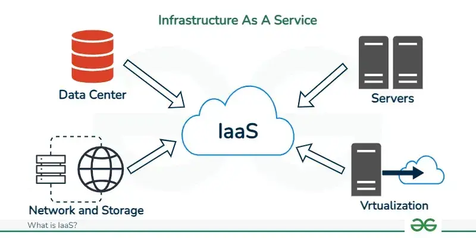
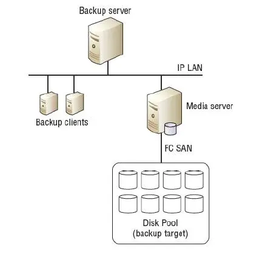
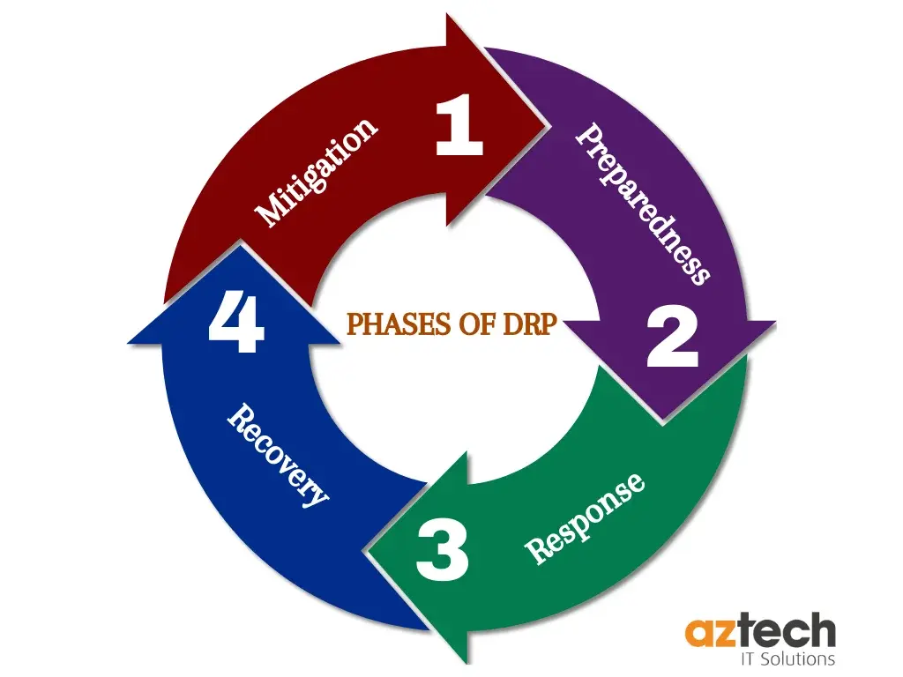

CC
Module 1
Characteristics of Cloud Computing.
- On-Demand Self-Service:
- Cloud computing allows users to access and provision services—like storage, computing power, or applications—automatically through a self-service portal, without requiring manual intervention from the service provider.
- Broad Network Access:
- Services are accessible over a broad network (typically the internet) and can be used from various devices—such as laptops, smartphones, or tablets—using standardized protocols.
- Resource Pooling:
- The way a cloud service provider combines and manages its computing resources—like servers, storage, memory, and networking—to serve multiple users or customers efficiently.
- Measured Service:
- Usage of cloud resources is tracked and quantified using metering tools, enabling a pay-as-you-go or utility-based billing model.
- These tools also support monitoring, auditing, and reporting, providing transparency for both users and providers.
- Rapid Elasticity:
- Cloud services can scale resources up or down quickly and automatically to match user demand.
Cloud Deployment Models.
flowchart TD
t[Types of Cloud]
t --> Public
t --> Private
t --> Hybrid
t --> Community
Public --> EC2
Public --> ibm[IBM
SmartCloud]
Public --> gae[Google
AppEngine]
Private --> ic[On-premise]
Private --> cc[Outsourced]
Hybrid --> AWS
Hybrid --> GSuite
Community --> heccc[HealthCare
Community Cloud]
- Public Cloud

- It is owned and operated by a third-party provider who offers resources (e.g., servers, storage, applications) over the internet to the general public or multiple organizations.
- In public cloud, computing resources are managed and operated by the Cloud Service Provider (CSP).
- Example: Amazon elastic compute cloud (EC2), IBM SmartCloud Enterprise, Microsoft, Google App Engine, Windows Azure Services Platform.
- Private Cloud

- Private cloud is also known as an internal cloud or corporate cloud.
- It is used by organizations to build and manage their own data centers internally or by the third party.
- Based on the location and management, National Institute of Standards and Technology (NIST) divide private cloud into the following two parts:
- On-premise private cloud
- Outsourced private cloud
- Hybrid Cloud

- Hybrid Cloud is a combination of the public cloud and the private cloud. we can say:
Hybrid Cloud = Public Cloud + Private Cloud - Hybrid cloud is partially secure because the services which are running on the public cloud can be accessed by anyone, while the services which are running on a private cloud can be accessed only by the organization's users.
- Example: Google Application Suite (Gmail, Google Apps, and Google Drive), Amazon Web Services.
- Community Cloud

- Community cloud allows systems and services to be accessible by a group of several organizations to share the information between the organization and a specific community.
- It is owned, managed, and operated by one or more organizations in the community, a third party, or a combination of them.
- Example: Health Care community cloud
Cloud Computing Services.
- Infrastructure as a Service (IaaS)
- 
- IaaS is also known as Hardware as a Service (HaaS). It is a computing infrastructure managed over the internet.
- The main advantage of using IaaS is that it helps users to avoid the cost and complexity of purchasing and managing the physical servers.
- Example: DigitalOcean, Linode, Amazon Web Services (AWS), Microsoft Azure, Google Cloud.
- Platform as a Service (PaaS)

- PaaS cloud computing platform is created for the programmer to develop, test, run, and manage the applications.
- Accessible to various users via the same development application.
- Integrates with web services and databases.
- Example: AWS Elastic Beanstalk, Windows Azure, Force.com, Google App Engine.
- Software as a Service (SaaS)


- SaaS is also known as "on-demand software".
- It is a software in which the applications are hosted by a cloud service provider.
- Users can access these applications with the help of internet connection and web browser.
- Example: BigCommerce, Google Apps, Salesforce, Dropbox, ZenDesk, Cisco WebEx, ZenDesk, Slack, and GoToMeeting.
Cloud Models.
NIST (National Institute of Standards and Technology) Model
flowchart TD
subgraph Essential_Characteristics[Essential Characteristics]
direction TB
A[Broad
Network Access]
B[Rapid
Elasticity]
C[Measured
Service]
D[On-Demand
Self-Service]
E[Resource
Pooling]
end
subgraph Service_Models[Service Models]
direction TB
F["Software as a Service
(SaaS)"]
G["Platform as a Service
(PaaS)"]
H["Infrastructure as a Service
(IaaS)"]
end
%% Deployment Models Section
subgraph Deployment_Models[Deployment Models]
direction TB
I[Public]
J[Private]
K[Hybrid]
L[Community]
end
Essential_Characteristics --> Service_Models --> Deployment_Models
The most commonly used model for cloud computing is defined by on United States government agency called National Institute of Standards and Technology which is widely accepted by many organizations.
The NIST cloud computing model has broadly describe the scope of it based on separated deployment models and service models along with their key attributes.
Cloud Cube Model

Four Dimensions of the Cloud Cube Model
- Internal/External
- This dimension refers to the physical location of the data.
- Internal: Data resides within the organization’s own boundaries (e.g., a private cloud hosted on-site).
- External: Data is stored outside the organization’s boundaries (e.g., a public cloud like AWS or Google Cloud).
- Insourced/Outsourced
- This dimension focuses on who provides and manages the cloud services.
- Insourced: Services are managed by the organization’s own staff.
- Outsourced: Services are provided and managed by a third-party vendor.
- It addresses the operational responsibility and sourcing of the cloud infrastructure.
- Proprietary/Open
- This dimension deals with the ownership and accessibility of the technology.
- Proprietary: The cloud service is owned and controlled by a specific provider, often with restricted interoperability or locked-in ecosystems.
- Open: The service uses open standards, allowing greater interoperability, data portability, and flexibility across providers.
- Perimeterized/De-perimeterized
- This dimension reflects the security architecture and boundaries.
- Perimeterized: Operations occur within traditional security boundaries, such as firewalls, typical of legacy IT systems.
- De-perimeterized: Security is designed for a boundary-less environment, relying on collaboration-oriented architectures suited for modern cloud systems.
Advantages & Disadvantages of Cloud computing.
Advantages
- Improved Accessibility: Users can access data and applications from anywhere with an internet connection, enhancing convenience and remote work.
- Optimum Resource Utilization: Cloud services allow efficient use of computing resources, reducing waste and optimizing performance.
- Scalability and Speed: Resources can be quickly scaled up or down based on demand, providing fast deployment and adaptability.
- Minimizes Licensing Cost of Software: Subscription-based models reduce the need for expensive upfront software licenses.
- Less Personnel Training: Cloud solutions often come with user-friendly interfaces, lowering the need for extensive staff training.
- Flexibility of Work Practices: Enables diverse work setups, such as hybrid or remote environments, improving productivity.
- Sharing of Resources and Costs: Multiple users or organizations can share infrastructure, spreading costs and fostering collaboration.
Disadvantages
- Data Protection: Storing data off-site increases risks of breaches or unauthorized access if security measures are weak.
- Data Recovery and Availability: Downtime or service outages can hinder access to data, and recovery might depend on the provider’s capabilities.
- Regulatory and Compliance Restrictions: Cloud solutions may not always meet industry-specific legal or geographic data storage requirements.
- Management Capabilities: Relying on third-party providers can limit control over systems and make management more complex.
Cloud and other similar configurations
- Cloud Computing:

- A model delivering on-demand computing resources (e.g., servers, storage, applications) over the internet, managed by a third-party provider.
- Peer to Peer Architecture:

- A decentralized network where each node (peer) acts as both a client and a server, sharing resources directly with others.
- Client Server Architecture:

- A centralized model where clients (users/devices) request services from a dedicated server that processes and responds.
- Grid Computing:
 - A distributed system combining resources from multiple machines to solve large-scale computational problems, often across organizations.
- A distributed system combining resources from multiple machines to solve large-scale computational problems, often across organizations.
- Cluster computing:

- A group of tightly linked computers (nodes) working together as a single system to improve performance or reliability.
- Distributed computing:

- A system where multiple independent computers collaborate over a network to achieve a common goal, often without a central coordinator.
Components of Cloud Computing.
- Cloud Client
- The cloud client is a device through which user can gain access to cloud services.
- As most of the clouds in the world follows BYOD (Bring your own device) concept, they allow users to use any device to access cloud services which has access to the network or internet and browser.
- The commonly used cloud clients are Mobile clients, Thin clients, Thick clients, Laptops, desktops etc.
- Cloud Network
- A network is the connecting link between a user and the cloud services.
- The internet is the most straightforward and common choice for accessing the cloud.
- Employing advanced network services, such as encryption and compression, during transit will benefit both the service provider and the user.
- Cloud Application Programming Interface (API)

- A cloud API is a set of programming instruction and tool that abstraction over specific provider cloud.
- These calls can be used to build applications for accessing and communicating with the cloud services.
- APIs help programmers to have a common mechanism for connecting to a particular cloud service.
Module 2
Type of Hypervisors.

Hypervisors create a virtualization layer that separates CPU / Processors, RAM and other physical resources from the virtual machines you create.
- Type 1 Hypervisor
- A bare-metal hypervisor (Type 1) is a layer of software we install directly on top of a physical server and its underlying hardware.
- There is no software or any operating system in between, hence the name bare-metal hypervisor.
- A Type 1 hypervisor is proven in providing excellent performance and stability since it does not run inside Windows or any other operating system.
- Type 1 hypervisors are mainly found in enterprise environments.
- Type 2 Hypervisor
- This type of hypervisor runs inside of an operating system of a physical host machine.
- As opposed to type 1 hypervisors that run directly on the hardware, hosted hypervisors have one software layer underneath. In this case we have:
Definition of Virtualization.

Virtualization is the process of creating a virtual (rather than physical) version of computing resources, such as servers, operating systems, storage devices, or networks.
It involves abstracting physical hardware and software into virtual instances that can run independently on a single physical machine, managed by a software layer called a hypervisor.
- Types:
- Server Virtualization: Multiple virtual servers on one physical server.
- Desktop Virtualization: Virtual desktops for users (e.g., VDI).
- Storage Virtualization: Pooling physical storage into a single virtual resource.
- Network Virtualization: Creating virtual networks independent of physical hardware.
Levels of Virtualization.
flowchart TD
subgraph al[Application Level]
direction TB
JVM
Panot
.Net
end
subgraph ll[Library Level]
direction TB
WINE
WABI
vCU
end
subgraph os[OS Level]
direction TB
Jai
FVM
Ensim's
end
subgraph hl[Hardware Level]
direction TB
VMware
end
subgraph isa[Instruction Set Level]
direction TB
BIRD
QEMU
Dynamo
end
al --> ll --> os --> hl --> isa
- Application Level
- Description: This level focuses on virtualization at the application layer, where runtime environments or virtual machines abstract the underlying system to execute applications.
- JVM (Java Virtual Machine): Runs Java bytecode, allowing Java applications to operate across different platforms without modification.
- .Net: A Microsoft framework that executes applications written in languages like C# by providing a runtime environment (CLR - Common Language Runtime), ensuring portability across Windows systems (and beyond with extensions).
- Description: This level focuses on virtualization at the application layer, where runtime environments or virtual machines abstract the underlying system to execute applications.
- Library Level
- Description: This level involves virtualization or emulation by translating or providing compatible library calls, enabling applications from one system to run on another.
- WINE: A compatibility layer that allows Windows applications to run on Unix-like systems (e.g., Linux) by implementing Windows API calls.
- WABI (Windows ABI): Historically, a technology for running Windows applications on Unix systems, similar to WINE, though less common today.
- Description: This level involves virtualization or emulation by translating or providing compatible library calls, enabling applications from one system to run on another.
- OS Level
- Description: This level pertains to virtualization at the operating system layer, typically involving isolated environments or lightweight virtualization on a single OS kernel.
- Ensim's: refers to Ensim Corporation’s Virtual Private Server software, which provides OS-level virtualization by creating isolated user-space instances.
- Description: This level pertains to virtualization at the operating system layer, typically involving isolated environments or lightweight virtualization on a single OS kernel.
- Hardware Level
- Description: This level involves full virtualization of hardware, enabling multiple operating systems to run on a single physical machine.
- VMware: A well-known platform that creates virtual machines by virtualizing hardware resources (CPU, memory, etc.), allowing different OSes to operate independently.
- Purpose: Provides complete isolation by simulating physical hardware, supporting diverse OS deployments.
- Description: This level involves full virtualization of hardware, enabling multiple operating systems to run on a single physical machine.
- Instruction Set Level
- Description: This level focuses on emulating or translating processor instruction sets, allowing code for one architecture to run on another.
- QEMU: An open-source emulator that translates instructions between architectures (e.g., running ARM code on x86), supporting full system emulation.
- Dynamo: Likelydynamic binary translation tool (e.g., HP’s Dynamo), optimizing or translating instruction sets at runtime.
- Description: This level focuses on emulating or translating processor instruction sets, allowing code for one architecture to run on another.
KVM

KVM, or Kernel-based Virtual Machine, is an open-source virtualization technology integrated into the Linux kernel.
It allows a single physical machine to run multiple virtual machines (VMs), each with its own operating system and applications, by transforming the Linux kernel into a hypervisor.
Xen.

Xen is a type-1 hypervisor, meaning it runs directly on the hardware, providing a layer of abstraction that allows multiple guest operating systems (referred to as "domains") to share the same physical resources.
Originally developed at the University of Cambridge, it is now maintained by the Xen Project under the Linux Foundation.
Pros and Cons of Virtualization.
Pros of Virtualization
- Efficient Hardware Utilization
- Most businesses invest heavily in physical servers and systems but end up using only a fraction of their capacity.
- Virtualization addresses this inefficiency by enabling multiple virtual instances to operate on the same hardware.
- High Availability
- Virtualization provides advanced features like live migration, which lets virtual instances move between servers without interrupting ongoing processes.
- Easy Recovery and Backup
- With virtualization, backing up and recovering data becomes simpler thanks to tools that offer near real-time mirroring and duplication.
- Quick and Easy Setup
- Setting up physical servers is a slow process involving purchasing, shipping, and installing hardware, followed by software configuration—often taking days or weeks.
- Virtualization, however, enables rapid provisioning.
Cons of Virtualization
- High Initial Investment
- While virtualization cuts long-term operational costs, the upfront expenses for servers, storage, and software can be substantial.
- Data Security Risks
- Virtual instances often run on shared hardware managed by third-party providers, which can expose data to risks.
- Scalability Challenges
- Virtualization supports scalability, but rapid expansion can be complicated and slow.
- Performance Overhead
- The abstraction layer in virtualization can reduce performance, particularly for resource-heavy tasks.
- Unintended Server Sprawl
- The ease of creating virtual servers can lead to an excessive number of VMs, known as server sprawl.
Cloud Vs Virtualization.
| Aspect | Virtualization | Cloud Computing |
|---|---|---|
| Definition | Virtualizes physical resources (e.g., servers). | On-demand services over the internet (e.g., IaaS). |
| Purpose | Optimizes hardware use. | Scalable access to shared resources. |
| Scope | Local virtual machines/resources. | Broad services across data centers. |
| Deployment | On-premises infrastructure. | Public, private, or hybrid cloud. |
| Scalability | Limited by hardware. | Highly scalable on demand. |
| Cost | Upfront hardware costs. | Pay-as-you-go. |
| Accessibility | Internal network only. | Anywhere with internet. |
Module 3
SPI Model.

The SPI Model, also referred to as Cloud Computing Stacks, is a framework that categorizes the three primary service models in cloud computing.
Cloud computing delivers computing resources—such as storage, processing power, and applications—over the internet, eliminating the need for users to manage physical infrastructure directly.
- Infrastructure as a Service (IaaS)
- Definition: IaaS is the foundational layer of the SPI Model, providing virtualized computing resources over the internet. It allows users to rent infrastructure components like virtual machines, storage, and networking.
- Examples: Amazon Web Services (AWS) EC2, Microsoft Azure Virtual Machines, Google Compute Engine.
- Services: VM, IP address, firewall, load balances & virtual LAN.
- Use Case: Ideal for organizations needing full control over their infrastructure without investing in physical hardware, such as setting up a custom web server.
- Platform as a Service (PaaS)
- Definition: PaaS sits above IaaS and provides a platform for developing, deploying, and managing applications. It abstracts away the underlying infrastructure, offering tools like databases, middleware, and development frameworks.
- Examples: Google App Engine, Microsoft Azure App Services, Heroku.
- Services: OS, DB, WebServer.
- Use Case: Perfect for developers who want to build and scale applications quickly without handling server management, such as creating a web application.
- Software as a Service (SaaS)
- Definition: SaaS is the top layer, delivering fully functional software applications over the internet on a subscription basis. Users access these applications through a web browser without needing to install or maintain them locally.
- Examples: Salesforce, Google Workspace (e.g., Gmail, Google Docs), Microsoft Office 365.
- Services: EMail, Social Network & Office
- Use Case: Best for end-users or businesses requiring ready-to-use software, such as a customer relationship management (CRM) system.
Everything as a Service (XaaS).
"Everything as a Service" (XaaS) is a broad term in cloud computing that describes a model where an extensive range of modern digital services, products, and tools are delivered to users over the internet on demand.
XaaS allows users to access sophisticated resources without significant upfront investment in hardware, software, or infrastructure.
These services are typically provided by third-party vendors on a subscription or pay-as-you-go basis, offering flexibility, scalability, and cost savings.
- Security as a Service (SECaaS)
- What It Is: Security as a Service is an outsourced model where a third-party provider manages an organization’s security needs over the internet.
- Examples: At its simplest, SECaaS includes anti-virus software delivered online. More advanced offerings encompass firewalls, intrusion detection, and threat intelligence.
- Identity Management as a Service (IDaaS)
- What It Is: IDaaS is a cloud-based solution for managing user identities and access controls without requiring investment in underlying hardware or software.
- Features: Includes multi-factor authentication (2FA), biometrics, and logging of user activities to monitor and improve behaviors.
- Database as a Service (DBaaS)
- What It Is: DBaaS provides access to a cloud-hosted database, eliminating the need for physical hardware setup, software installation, or performance configuration.
- Examples: Amazon RDS, Google Cloud SQL.
- Collaboration as a Service
- What It Is: This service delivers cloud-based tools for teamwork and communication, such as email, document management, instant messaging, and video conferencing.
- Examples:
- Microsoft 365 (including Meeting Live and messaging services).
- Google Workspace (used by over 1.5 million businesses for collaborative applications).
- Cisco Webex (a centerpiece of Cisco’s collaboration platform since acquiring Webex in 2007).
- Compliance as a Service (CaaS)
- What It Is: CaaS is a framework that outsources the roles, skills, and processes needed to ensure compliance with regulatory requirements.
- Purpose: Protects client and consumer data while keeping organizations aligned with industry-specific guidelines and laws.
- Monitoring as a Service (MaaS)
- What It Is: MaaS provides cloud-based tools to track the performance and state of applications, networks, systems, or other cloud-deployable elements.
- Network as a Service (NaaS)
- What It Is: NaaS delivers networking infrastructure—such as wide area networking (WAN), datacenter connectivity, and bandwidth on demand—to customers who don’t want to build their own networks.
- Disaster Recovery as a Service (DRaaS)
- What It Is: DRaaS is a cloud-based service that backs up an organization’s data and IT infrastructure in a third-party environment, ensuring recovery after a disaster.
- Backup as a Service (BaaS)
- What It Is: BaaS involves regularly backing up files, folders, or entire hard drives to a secure, remote cloud repository over a network connection.
- What It Is: BaaS involves regularly backing up files, folders, or entire hard drives to a secure, remote cloud repository over a network connection.
What is the difference between backups and a disaster recovery plan?
Backup

The difference between a backup and a disaster recovery plan is scope. A backup might include a file, a database, a full system image or any combination of these.
Disaster Recovery Plan

While a disaster recovery plan is a detailed strategy across employees and systems that works together to restore business operations after a disaster or data loss event. Backups are a variable of the disaster recovery equation.